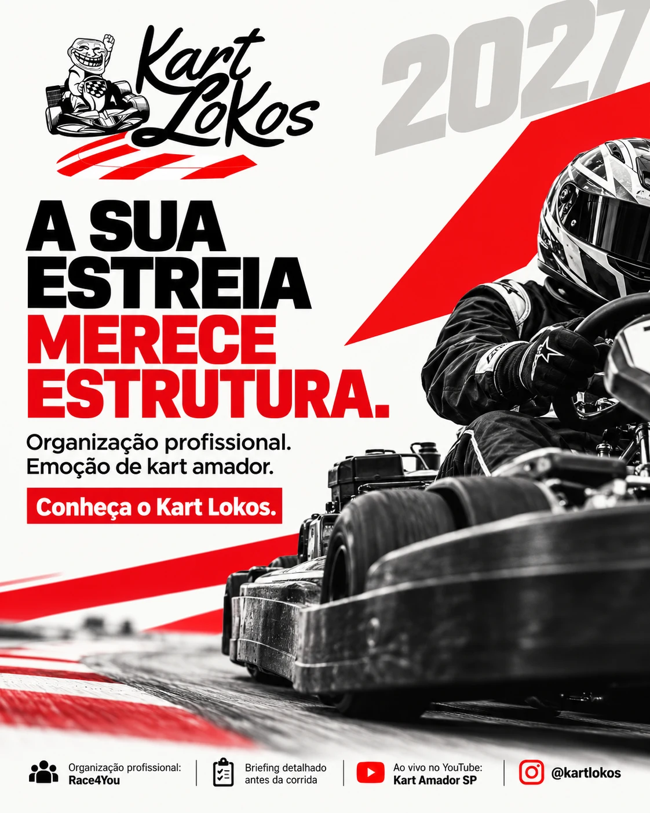
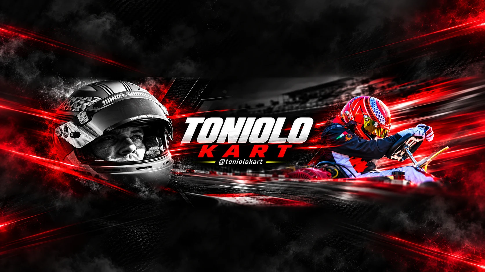

DESIGN, TECNOLOGIA & DADOS
Sua próxima
ideia merece
ganhar forma.
Crio visuais que chamam atenção, sites que conectam e dashboards que transformam informação em clareza.
Explore meus projetos ↘

DESIGN QUEENTRA EM CENA.
01 / TRABALHOS SELECIONADOS
Diferentes desafios. Um olhar conectado.O trabalho
fala por si.
Da primeira impressão à experiência completa.
Uma seleção do que eu crio e desenvolvo.
6 projetos
02 / COMO POSSO AJUDAR
O seu projeto, do começo ao próximo passo.Um olhar criativo.
Mais possibilidades.
Design & conteúdo visual
Artes para Instagram, campanhas, thumbnails, banners e capas que traduzem o universo da sua marca.
Sites & experiências digitais
Sites de apresentação, páginas de campanha e interfaces responsivas para colocar seu negócio em cena.
Dados & dashboards
Organização, análise e visualização de dados para acompanhar operações e apoiar decisões com mais clareza.
03 / POR TRÁS DOS PROJETOS
Criatividade na forma.
Clareza na entrega.
Sou Guilherme Molina. Meu trabalho conecta criação visual, desenvolvimento web e análise de dados.
Gosto de transitar entre esses mundos: traduzir uma ideia em imagem, construir uma experiência digital e encontrar uma forma simples de apresentar informações complexas.
Minha atuação com dados aplicada a risco, crédito e operações financeiras também influencia meu jeito de criar: entender o contexto, organizar as ideias e dar atenção ao que precisa ficar claro.
Uso inteligência artificial como parte do processo criativo, com curadoria e revisão das entregas. As aplicações estão identificadas nos projetos.
Conheça minha trajetória no LinkedIn ↗DA CONVERSA À ENTREGA
Primeiro, o seu contexto.
Conversamos sobre seu objetivo, público e o que precisa sair do papel.
Uma direção com intenção.
Organizo as ideias e desenvolvo uma proposta visual ou digital para o projeto.
Ajustar faz parte.
Revisamos o trabalho e alinhamos os detalhes para chegar à entrega combinada.
04 / VAMOS CRIAR ALGO JUNTOS
Qual é a sua
próxima ideia?
Um site, uma campanha ou um dashboard.
Me conte o que você tem em mente.